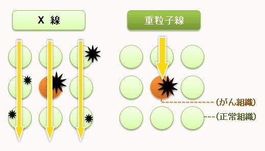
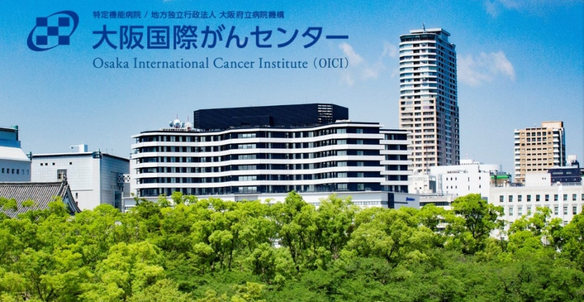

중입자 치료
기존 방사선치료를 넘어선 차세대 초정밀 암 치료
암세포에만 에너지를
집중적으로 전달합니다.
중입자치료는 탄소이온(Carbon Ion)을 빛의 속도에 가깝게 가속하여 암세포를 타격하는 차세대 정밀 방사선 치료입니다.
💡 브래그 피크(Bragg Peak)란?
일반 X선과 달리 몸을 통과할 때는 낮은 선량을 유지하다가, 종양이 위치한 깊이에서 에너지를 폭발적으로 방출한 후 멈추는 물리적 특성을 말합니다. 이 덕분에 암 조직에는 치명타를 입히면서도 주변 정상 장기의 손상은 최소화합니다.

강력한 생물학적 효과로
암세포 근본적 파괴
단순히 암의 크기를 줄이는 데 그치지 않고, 암세포의 DNA를 직접 복잡하게 단절시켜 증식 능력을 원천 차단합니다.
일반 방사선이나 양성자보다 약 2.3~3배 높은 생물학적 효과(RBE)를 지녀 산소가 부족한 난치성 암이나 방사선 저항성이 높은 암에도 탁월한 효과를 기대할 수 있습니다.

초정밀 빔 스캐닝 기술로
정상 조직 손상 최소화
최신 빔 스캐닝(Beam Scanning) 기술을 통해 암의 복잡한 형태에 맞춰 빔을 종이 한 장 두께로 촘촘히 칠하듯 조사합니다.
0.1mm 단위의 정밀 제어가 가능하여 주요 장기에 도달하는 방사선량을 최소화하며, 이로 인해 치료 중·후의 부작용 부담이 크게 줄어듭니다.

중입자 치료의 5가지 장점
정밀함, 강력함, 안전함을 모두 갖춘 차세대 암 치료의 핵심
강력한 암세포 파괴력
- 기존 대비 2.3~3배 생물학적 효과
- 산소 부족한 난치성 암세포 파괴
- 방사선 저항성 강한 암에 효과적
초정밀 표적 치료
- 암 조직 형태에 맞춘 빔 스캐닝
- 0.1mm 단위의 정상 조직 보호
- 주요 장기 손상 및 부작용 억제
재발 가능성 원천 차단
- 암세포 DNA 이중 나선 복잡 단절
- 단순 축소가 아닌 유전자 완전 파괴
짧은 치료 기간
- 일반 방사선(30~40회) 대비 12회 내외
- 일본 체류 기간 단축 및 비용 절감
신체적 부담 대폭 감소
- 통증이나 뜨거운 느낌 없음
- 입원 없이 외래 치료 중심 진행
- 치료 중에도 높은 삶의 질 유지
중입자치료,
어떤 분들께 필요할까요?
수술이 어려운 위치의 종양을 진단받은 경우
기존 치료 이후 재발 가능성이 강하게 우려되는 경우
고령 또는 전신 상태 저하로 수술의 신체적 부담이 큰 경우
삶의 질을 지키며 보다 정밀하고 집중적인 치료를 원하시는 경우
주요 치료 적용 암종 (고형암)
* 혈액암(백혈병 등) 및 광범위한 다발성 전이암은 적용이 제한될 수 있습니다. 정확한 치료 가능 여부는 일본 현지 전문의의 무료 사전 판독을 통해 확인해 드립니다.
일본 중입자 치료가 특별한 이유
일본은 1994년 세계 최초로 중입자치료를 상용화한 이래, 전 세계에서 가장 압도적인 인프라와 30년 이상의 누적 임상 데이터를 보유한 선도국입니다.
세계 최다 인프라
전 세계 시설의 상당 부분을 차지하는 7개의 첨단 치료 센터를 성공적으로 운영 중입니다.
30년 임상 데이터
암종별 최적 선량 및 재발암 극복 프로토콜 등 세계 최고 수준의 치료 노하우가 축적되어 있습니다.
빠른 치료 연결 시스템
한국 대비 대기 없이 신속한 검토와 일정 조율이 가능하여 소중한 골든타임을 지킬 수 있습니다.
희망중입자동행센터 × 오사카 중입자 치료 센터
신뢰할 수 있는 글로벌 의료 협력 네트워크
안전하고 체계적인 치료 연계
오사카 중입자 치료 센터는 일본 중심부에 위치한 최고 수준의 전문 기관입니다. 희망중입자동행센터는 검증된 협력 관계를 바탕으로, 환자분의 상태에 맞는 치료 가능성 선 판독, 의료 정보 번역, 진료 연계 및 현지 밀착 동행을 완벽하게 지원합니다.
- 절개 없는 비침습적 암 치료 시스템 확립
- 방사선 저항성 종양에 대한 압도적 경험
- 복잡한 서류 없이 국내 검사 기록만으로 사전 검토
